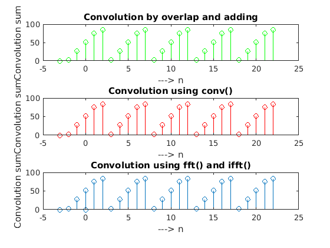

clear; clc; % x[n] = [0 1 2 3 4] from n = 0 % in code y[n]=[x x x x x] is denoted as x x = [0 1 2 3 4] x = [ x x x x x ] % y h = [ 3 21] % h ax = -1 % starting point of y ah = -2 % starting point of h % selecting the final start point a = ax+ah; % a) first part of solution m = length(x); n = length(h); x1 = [x,zeros(1,n)]; h1 = [h,zeros(1,m)]; % c overlap and adding method % number of terms after convolution n + m - 1 for i = 1:m+n-1 Y(i)=0; % defining the i'th term 0 initially for j = 1:m % for all the terms in x if(i-j+1>0) % but not the terms which are not overlapped Y(i) = Y(i) + x1(j)*h1(i-j+1); % summation to Y and H is flipped end end end % defining the x axis for the the convolution solution xaxis = a:a+numel(Y)-1; % plotting subplot(3,1,1) stem(xaxis,Y,'g') ylabel('Convolution sum') xlabel('---> n') title('Convolution by overlap and adding') %a % conv(X,H) is the default function for the convolution of two signals subplot(3,1,2) stem(xaxis,conv(x,h),'r') ylabel('Convolution sum') xlabel('---> n') title('Convolution using conv()') % fft() and ifft() are periodic DFT but since sufficient padding with zeros is done linear convolution can be calculated. But they have one element extra on the end subplot(3,1,3) stem([xaxis 0],real(ifft(fft(x1).*fft(h1)))) title('Convolution using fft() and ifft()') xlabel('---> n') ylabel('Convolution sum')
x =
0 1 2 3 4
x =
Columns 1 through 13
0 1 2 3 4 0 1 2 3 4 0 1 2
Columns 14 through 25
3 4 0 1 2 3 4 0 1 2 3 4
h =
3 21
ax =
-1
ah =
-2
